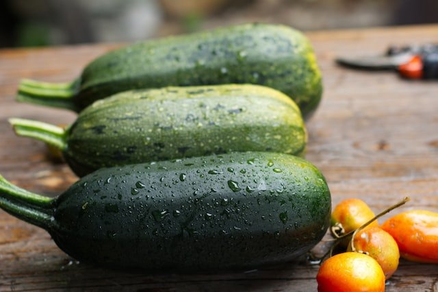
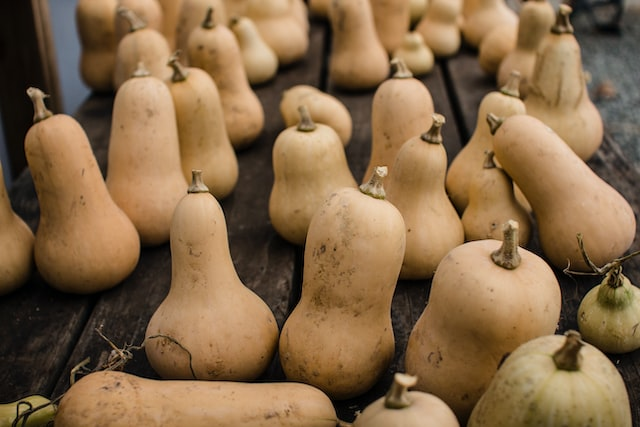
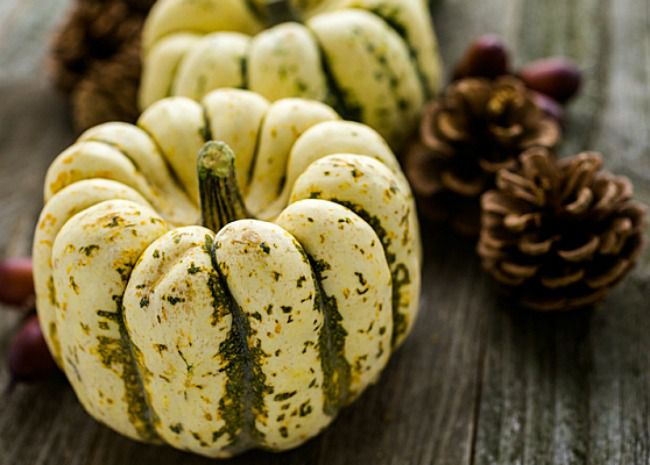

|  |
Zuccini Mas de 40 cm de suavidad en cada uno de estas Curcubitas, noble hortaliza que ayuda a la digestión y a mantener la salud. Contiene potasio, calcio, fósforo y magnesio también vitaminas del grupo B, esenciales para la función cognitiva. Y, el ácido fólico, vitamina que ayuda al sistema nervioso y al sistema inmunitario. Precio: 3Unx$13.900 |
|  |
Butternut Botánicamente es una fruta, pero culinariamente se utiliza como una verdura. Esto se debe a que al momento de cocinarlas desarrollan una consistencia y sabor parecido al de la papa, probablemente por su contenido en almidón. La Butternut históricamente ha sido bien apreciada por sus beneficios. Los nativos americanos creían que las calabazas eran tan nutritivas como para proporcionar energía suficiente y acompañar a sus muertos en su “último viaje”, razón por la cual los enterraban con este alimento. Precio: Unx$7.770 |
|  |
Sweet Dumpling Sabor extra extra extra Dulce. Es considerado un tipo de calabaza especialmente sabroso. El aroma del patidou recuerda a las castañas. A menudo se cocina la fruta entera en el horno. Por sus colores verdes y blancos son también muy decorativas. Precio: Unx$14.960 |